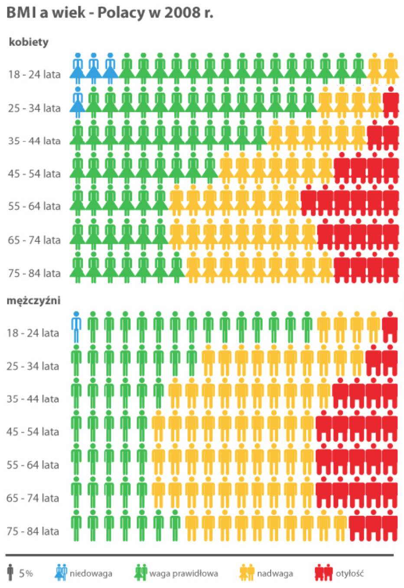

Zadanie: Odczytaj z poniższego wykresu o ile punktów procentowych w grupie wiekowej 25-34 lat nadwaga jest częstsza u mężczyzn niż u kobiet.
Jak to policzyć? Odczytaj jaki procent mężczyzn w wieku 25-34 lata ma nadwagę, następnie jaki procent kobiet w tym wieku ma nadwagę a w wyniku podaj różnicę tych dwóch liczb.

Ten wykres wykorzystuje technikę ISOTYPE aby pokazać jaka część osób w danym wieku ma właściwą masę ciała, jaka ma niedowagę a jaka nadwagę.
Skrót BMI na tym wykresie oznacza Wskaźnik masy ciała (ang. Body Mass Index). Więcej informacji o tym wskaźniku znajdziesz na wikipedii.
Dane przedstawione na tym wykresie pochodzą z portalu Eurostat, pełnego najróżniejszych statystyk dotyczących krajów europejskich.
Więcej o tym wykresie i historii techniki ISOTYPE możesz przeczytać Na tym blogu.